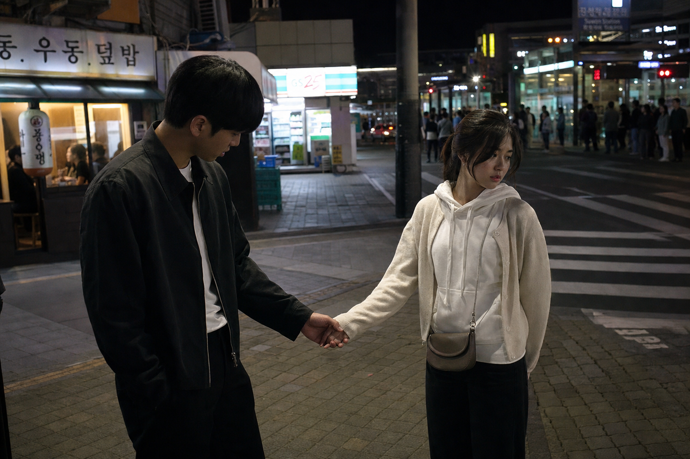

ep.027 손을 놓는 연습
화요일 저녁.
수원역 앞 버스정류장은 퇴근하는 사람들로 붐볐다. 버스가 설 때마다 젖은 브레이크 냄새와 매연이 낮게 깔렸고, 사람들은 서로 어깨를 피하며 줄을 다시 만들었다.
김초연은 편의점 앞 파라솔 아래에 서 있었다.
비가 온 건 아니었다. 그런데 바닥은 하루 종일 밟힌 먼지와 습기로 조금 끈적했고, 편의점 냉장고에서 흘러나온 찬 공기가 문이 열릴 때마다 발목을 스쳤다.
용식은 차를 잠깐 세우고 창문을 내렸다.
[김용식] "타."
초연은 바로 타지 않았다.
[김초연] "오늘 어디 가?"
[김용식] "밥 먹자. 너 어제 제대로 못 먹었잖아."
[김초연] "나 잘 먹었는데."
[김용식] "전화 끊고 나서 네 목소리 별로였어."
초연은 눈을 가늘게 떴다.
[김초연] "그걸 핑계로 밥 사주려는 거야?"
[김용식] "응. 그리고 나도 너랑 밥 먹고 싶고."
그 말에 초연은 잠깐 입을 다물었다. 민망해질 때마다 시선을 옆으로 빼는 버릇이 있었다. 오늘도 그랬다. 편의점 유리문에 비친 그녀의 얼굴이 옆으로 살짝 도망갔다.
[김초연] "비싼 데 가지 마."
[김용식] "너 비싼 데 싫어해?"
[김초연] "싫다는 게 아니라, 너는 가끔 너무 아무렇지도 않게 돈 써. 보는 사람이 더 불편할 때 있어."
용식은 핸들 위에 손가락을 얹었다.
그 말은 가볍게 넘길 수 없었다.
[김용식] "나도 아무렇지는 않아."
[김초연] "그래 보여."
[김용식] "좋은 데 가면 좋잖아. 맛있는 거 먹고, 오래 기억나는 데 가고. 나는 그런 데 쓰는 돈이 아깝지는 않은데, 네가 불편하면 조절할게."
초연은 조수석 문을 열었다.
[김초연] "그럼 오늘은 내가 고를래."
[김용식] "그래."
[김초연] "진짜 내가 골라도 돼?"
[김용식] "응."
[김초연] "나 이상한 데 데려가도 뭐라 하지 마."
[김용식] "안 해."
초연은 차에 타며 작게 웃었다.
그 웃음이 어제보다 조금 풀려 있었다.
두 사람이 간 곳은 수원역 뒤쪽 골목의 작은 우동집이었다. 간판 불이 반쯤 나가 있었고, 문을 열면 국물 냄새가 먼저 얼굴에 닿았다. 테이블은 네 개뿐이었고, 벽에는 오래된 메뉴판이 삐뚤게 붙어 있었다.
김초연은 창가가 아닌 안쪽 자리에 앉았다.
[김초연] "여기 고등학교 때 친구랑 가끔 왔어."
[김용식] "좋다."
[김초연] "아직 먹지도 않았는데?"
[김용식] "네가 자주 왔던 데라서."
초연은 물컵을 들다 말고 그를 봤다.
[김초연] "너 가끔 그런 말 되게 아무렇지 않게 한다."
[김용식] "이상해?"
[김초연] "아니. 좀... 사람 헷갈리게 해."
주문한 우동과 돈가스가 나왔다. 김이 올라왔고, 국물 냄새가 테이블 위에 오래 머물렀다. 초연은 젓가락으로 면을 풀다가 돈가스 한 조각을 용식 접시 쪽으로 밀었다.
[김초연] "먹어."
[김용식] "네 거잖아."
[김초연] "나눠 먹는 거 좋아하잖아."
용식은 젓가락을 멈췄다.
초연이 그걸 기억하고 있었다.
그는 별말 없이 돈가스를 집었다. 바삭한 튀김옷이 입안에서 부서졌고, 소스 맛은 달았다. 비싼 음식은 아니었다. 그런데 이상하게 조심스러웠다. 초연이 고른 골목, 초연이 자주 왔다는 가게, 초연이 밀어 준 돈가스 한 조각이 비싼 식당보다 더 쉽게 마음에 남았다.
[김초연] "너 어제 세미나실 예약 확인증 떨어뜨린 거 알지."
용식은 물컵을 내려놓았다.
[김용식] "봤어?"
[김초연] "내가 주워서 네 가방 앞주머니에 넣었어. 일부러 말 안 했어."
[김용식] "왜?"
[김초연] "네가 먼저 말하나 보려고."
용식은 숨을 작게 내쉬었다.
[김용식] "오늘 말하려고 했어."
[김초연] "응. 그 말도 예상했어."
그녀는 면을 한 젓가락 들어 올렸다.
[김초연] "나도 내가 피곤한 거 알아. 근데 이제 사귀잖아. 사귀면 원래 귀찮아지는 거야. 어디 가는지, 누구랑 있는지, 왜 연락 늦는지, 다 신경 쓰여."
[김용식] "나도 그래."
[김초연] "너도?"
[김용식] "술자리 간다고 했을 때 신경 쓰였어. 남자 선배 있다고 하니까 더 그랬고. 근데 내가 그걸로 네가 뭘 못 하게 하면 안 된다고 생각했어."
[김초연] "생각만 했어?"
[김용식] "응. 속으로는 싫었고."
초연은 젓가락을 내려놓았다.
[김초연] "나는 네가 안 싫은 척하는 것도 싫어."
[김용식] "그럼 싫으면 싫다고 말할게."
[김초연] "근데 명령처럼 말하지 마."
[김용식] "어렵네."
[김초연] "연애가 원래 어렵지. 너만 어려운 거 아니야."
그녀는 그렇게 말하고 다시 면을 먹었다. 말투는 무심했지만 귀 끝이 조금 붉었다. 가게 안은 좁았고, 옆 테이블의 라디오에서는 오래된 발라드가 낮게 흘렀다.
밥값은 18,000원이었다.
초연이 지갑을 꺼내려 하자 용식은 먼저 계산대에 카드를 내밀었다.
[김초연] "야."
[김용식] "오늘은 내가 사려고 데려온 거잖아."
[김초연] "그럼 다음엔 내가 사."
[김용식] "그래."
[김초연] "진짜야. 나 돈 없다고 안 사는 거 아니야."
[김용식] "알아."
초연은 더 말하려다 멈췄다.
계산대 옆에는 박하사탕이 놓여 있었다. 용식은 두 개를 집어 하나를 초연에게 건넸다. 초연은 사탕 포장을 뜯지 않고 손에 쥔 채 밖으로 나왔다.
골목에는 밤공기가 얇게 깔려 있었다.
두 사람은 바로 차로 가지 않았다. 초연이 먼저 걷기 시작했고, 용식은 옆에서 걸었다. 사람들 사이로 손등이 몇 번 스쳤다. 처음에는 우연이었다. 두 번째부터는 둘 다 알고도 피하지 않았다.
횡단보도 앞에서 신호가 빨간불로 바뀌었다.
초연의 손이 옆에 있었다.
용식은 손을 잡았다.
초연은 놀라지 않았다. 대신 손가락을 조금 움직여 그의 손가락 사이로 끼웠다. 손바닥이 맞닿자 방금 먹은 따뜻한 국물보다 더 오래 가는 열이 남았다.

[김초연] "사람 많아."
[김용식] "놓을까?"
[김초연] "그 말이 더 짜증 나."
[김용식] "왜?"
[김초연] "내가 놓으라면 놓을 거잖아. 근데 너는 사실 안 놓고 싶은 거잖아."
용식은 초연의 손을 조금 더 단단히 잡았다.
[김용식] "응. 안 놓고 싶어."
초연은 앞을 봤다.
신호등 불빛이 그녀의 옆얼굴에 번졌다. 머리카락 몇 가닥이 볼 옆에 붙어 있었고, 입술에는 사탕 포장을 뜯다 묻은 작은 주름이 남아 있었다.
[김초연] "그럼 그렇게 말해."
[김용식] "안 놓고 싶어."
초연은 대답하지 않았다.
하지만 손을 빼지도 않았다.
차 안으로 돌아왔을 때는 말이 더 줄었다. 용식은 주차권을 정산하고, 초연은 조수석에서 폴더폰을 열어 시간을 확인했다. 밤 열 시가 조금 넘어 있었다.
[김초연] "나 너무 늦으면 엄마한테 뭐라고 해야 돼."
[김용식] "바로 데려다줄게."
[김초연] "바로 말고, 조금 돌아가도 돼."
그 말이 차 안 공기를 바꿨다.
용식은 시동을 걸지 못하고 그녀를 봤다.
초연은 창밖을 보는 척했다.
[김초연] "왜 봐."
[김용식] "좋아서."
[김초연] "말을 좀..."
그녀는 끝까지 말하지 못했다.
용식은 시동을 걸었다. 차는 수원역을 벗어나 큰길로 나갔다. 일부러 먼 길을 잡았다. 팔달문 쪽을 돌아가는 길이었다. 밤의 가게들은 반쯤 문을 닫고 있었고, 노점 불빛이 유리창에 짧게 스쳤다.
초연은 안전벨트를 만지작거리다가 손을 내렸다.
용식은 신호에 멈췄을 때 그녀의 손을 다시 잡았다.
이번에는 조수석과 운전석 사이의 콘솔 위였다. 손을 잡기 애매한 위치라 팔꿈치가 서로 닿았다. 초연의 체온이 셔츠 소매 너머로 느껴졌다.
[김초연] "너 내일도 학교 와?"
[김용식] "수업 있잖아."
[김초연] "아니, 내 말은... 내일도 나 데려다줄 거냐고."
[김용식] "네가 싫다고 하기 전까지는."
초연은 입술을 다물었다.
[김초연] "나 싫다고 자주 말해도 진짜 싫은 거 아닐 때 있어."
[김용식] "그건 조금 어렵다."
[김초연] "어려워도 알아들어."
[김용식] "노력할게."
그녀는 손에 힘을 조금 줬다.
수원 집 근처 골목에 도착했을 때, 두 사람은 또 바로 내리지 못했다. 차 안은 조용했고, 앞유리 아래쪽에는 김이 아주 얇게 서렸다. 초연은 안전벨트를 풀었다가 다시 잡았다.
[김초연] "나 들어가야 돼."
[김용식] "응."
아무도 움직이지 않았다.
초연이 먼저 몸을 돌렸다. 얼굴이 가까워졌다. 가까운 거리에서 그녀의 립밤 냄새가 났다. 달고, 조금 싸구려 같은 복숭아 향이었다. 용식은 그 냄새 때문에 말할 타이밍을 놓쳤다.
[김초연] "너 지금 무슨 생각해?"
[김용식] "키스해도 되나."
말이 나가고 나서야 너무 직접적이었다는 걸 알았다.
초연은 놀란 얼굴로 그를 봤다.
그리고 웃지 않았다.
[김초연] "그걸 물어보면 내가 뭐라고 해야 돼."
[김용식] "싫으면 싫다고."
[김초연] "싫은 건 아닌데."
그녀는 말끝을 흐렸다.
용식은 다가가지 않았다.
기다렸다.
초연은 창밖을 한 번 봤다. 골목에는 지나가는 사람이 없었다. 편의점 간판 불빛만 조수석 유리에 떠 있었다. 그녀는 손에 쥔 사탕 포장을 무릎 위에 내려놓았다.
그리고 조금 먼저 다가왔다.
입술은 짧게 닿았다.
정말 짧았다.
떨어진 뒤에도 둘 다 바로 말을 하지 못했다. 초연은 입술을 손등으로 살짝 눌렀고, 용식은 핸들 아래쪽을 잡았다. 손가락에 힘이 들어갔다.
[김초연] "나 간다."
[김용식] "응."
[김초연] "내일 연락 잘해."
[김용식] "할게."
초연은 문을 열고 내렸다.
몇 걸음 걷다 말고 뒤돌아봤다.
[김초연] "오늘 일은 네가 먼저 말하지 마."
[김용식] "누구한테?"
[김초연] "아무한테도."
그녀는 그렇게 말하고 뛰듯이 골목 안으로 들어갔다.
용식은 한참 시동을 끄지 못했다.
조수석에는 뜯지 않은 박하사탕 껍질 하나가 남아 있었다.
그때 폴더폰이 짧게 울렸다.
용식은 답장을 쓰지 못했다.
입술에는 아직 초연의 온기가 남아 있었다.